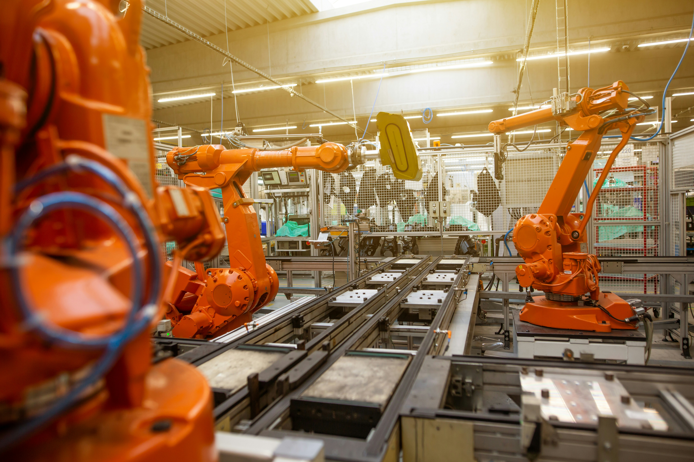
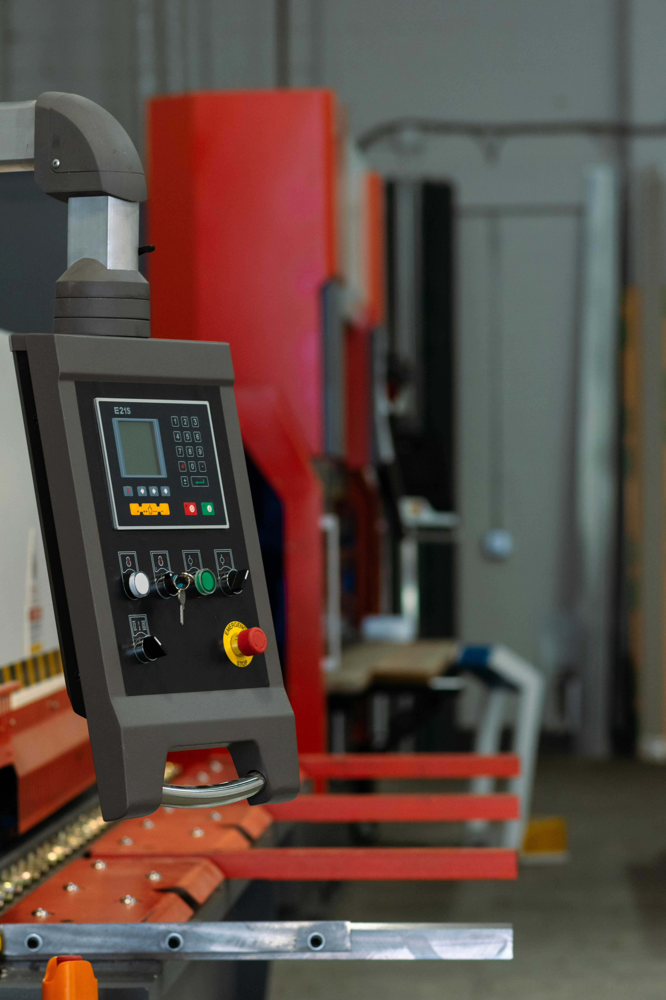
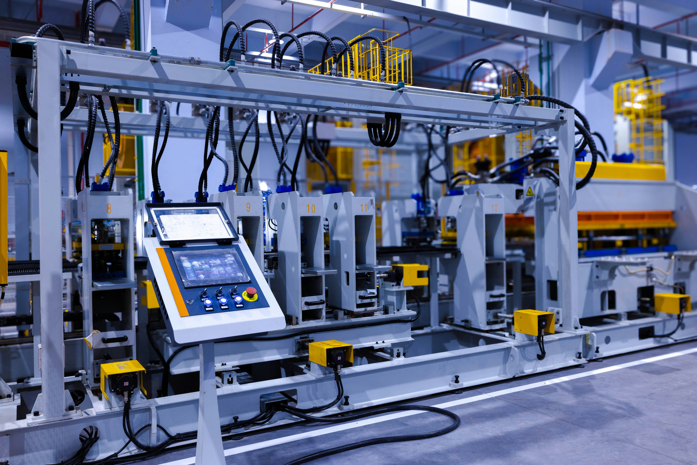

核心優勢與專業服務
精密製程技術
依產品用途規劃疊構、線寬線距與導通孔， 在打樣前先確認設計與製程條件。
全面品質管理
透過自動光學檢測（AOI）辨識線路異常， 搭配電性測試及批次紀錄，支援出貨檢驗與問題追查。
快速打樣彈性量產
依序安排工程樣品、小批試產與量產確認， 透過階段性驗證確認製程一致性。
認識智造科技
從產品需求建立製造條件
智造科技以多層 PCB 與高密度互連板為核心，服務方向涵蓋工業控制、網路通訊與運算設備。 開發初期先和設計端確認板厚、疊構、阻抗與使用環境，再由製程團隊評估材料、 線路配置和加工條件，讓工程樣品有明確的驗證依據。
打樣與試產期間，工程與品保團隊共同整理檢驗結果及異常紀錄。 每次調整圖面、材料或製程條件，都保留對應的版本與批次資料， 方便後續重複製造，也能在出現問題時追查原因。
從工程樣品到量產

01｜設計審查與打樣
根據電路圖面、板材需求及成品尺寸檢查製造可行性。 在工程樣品階段確認疊構、線寬線距與孔位，並記錄需要調整的項目。

02｜小批試產與檢驗
以小批試產確認加工條件，搭配外觀檢查、電性測試及必要的截面觀察， 比對實物和圖面要求。工程團隊依檢驗結果調整製程，再確認下一批的結果。

03｜量產管理與追溯
將工單、材料批號及檢測結果與出貨批次關聯。 發現品質異常時，可回查相同製程條件的批次，縮小排查範圍。
圖片為製造環境示意。
產品應用領域
工業控制
以控制器、人機介面與監測模組為應用方向。設計評估從機構尺寸、 接頭位置與安裝方式開始，讓板件與設備組裝條件一起確認。
網路通訊
以交換器、通訊閘道器和網路設備為應用方向。 依傳輸需求評估材料、疊構與阻抗，並在打樣階段安排對應量測。
伺服器與邊緣運算
以伺服器周邊控制板與邊緣設備為應用方向。 根據元件密度、散熱空間與介面配置，評估多層板的設計與製造條件。